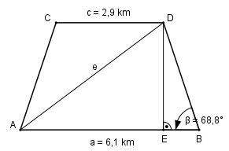

Aufgabe 168 Wie groß ist die Diagonale e des gleichschenkligen Trapezes?

6,1 km – 2,9 km EB = ------------------- = 1,6 km 2 Im Dreieck EBD: EB cos β = ------ |*b b b * cos β = EB |:cos β EB 1,6 km 1,6 km b = -------- = ----------- = ---------- = 4,4 km cos β cos 68,8° 0,3616 360° - 2 * β 360° - 2 * 64,5° γ = -------------- = ------------------ = 115,5° 2 2 Im Dreieck ABD: Fall SWS: Cosinussatz: e2 = a2 + b2 - 2 * a * b * cos β e2 = 6,12 + 4,42 - 2 * 6,1 * 4,4 * cos 68,8° e2 = 6,12 + 4,42 - 2 * 6,1 * 4,4 * 0,3616 = e2 = 37,2 |√ e = 6,1 km